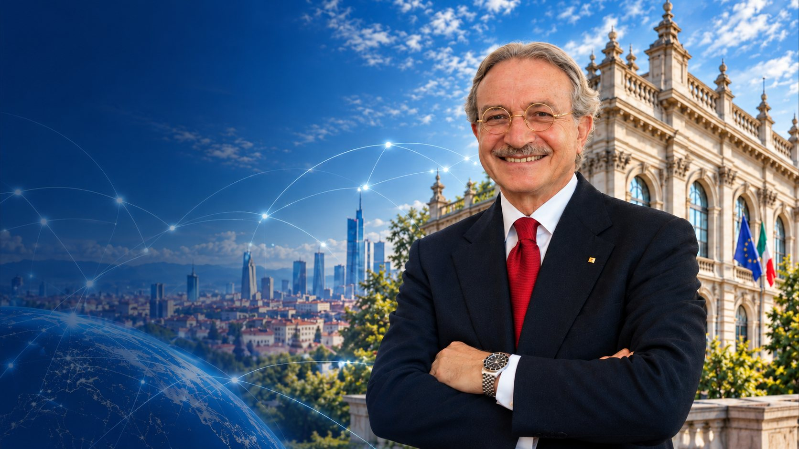
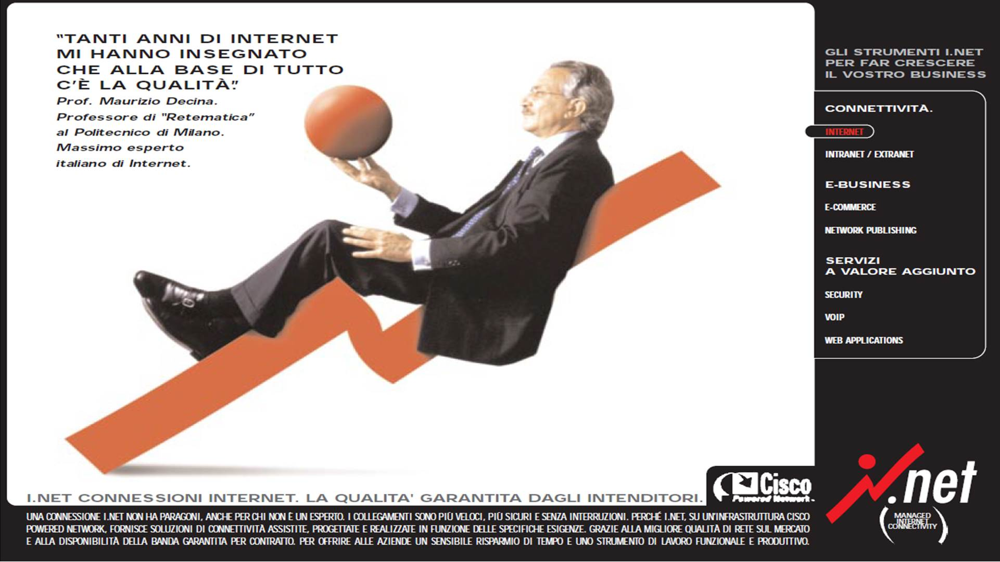

Digital Transmission
Digital encoding of telephone signals, PCM multiplex transmission and the planning of digital hierarchies.
Explore this area
Research · Education · International Collaboration
A lifetime of research, education and international collaboration to advance telecommunications, from fundamental research to real-world impact, contributing for decades to a more connected society.
More than fifty-five years in telecommunications, from research and teaching to international standards and the regulation of networks. One of the fathers of high-speed packet switching, the work that opened the way to today’s Internet.
Contributions to digital transmission, switching, network architectures, interoperability and security.
Learn moreLeadership roles at Bell Laboratories, Italtel, CEFRIEL and on the boards of major ICT companies, bridging research and real-world innovation.
Explore careerCommissioner of AGCOM from 2012 to 2013, President of Infratel Italia from 2016 to 2020, and expert consultant to the Minister for Technological Innovation and Digital Transition from 2021 to 2022.
View contributionsA lifetime committed to a more connected world
Graduated in Electronic Engineering, University of Rome
Full Professor, University of Rome La Sapienza
Scientific consultant, Bell Laboratories
Professor of Telecommunications, Politecnico di Milano
Founder and Scientific Director, CEFRIEL
President, IEEE Communications Society
Commissioner, AGCOM
President, Infratel Italia
Expert consultant to the Minister for Technological Innovation
Research areas
From fundamental research to global standards, contributing to the networks that connect people and societies.
Digital encoding of telephone signals, PCM multiplex transmission and the planning of digital hierarchies.
Explore this areaSixteen years as Vice Chairman of CCITT Study Group XVIII, shaping the Recommendations behind ISDN.
Explore this areaFrom the Fast Packet Switching test-bed at Bell Laboratories to ATM switching for voice, data and video.
Explore this areaConvergence of telecommunications and computing, Internet infrastructure, cryptography and network security.
Explore this area
I.NET advertisement, 1998
“Tanti anni di Internet mi hanno insegnato che alla base di tutto c’è la qualità.”
English“So many years of the Internet have taught me that quality is at the foundation of everything.”
The interviews, the publication list, and both biographies
English version of the conversation in the historical collections of the Department of Electronics, Information and Bioengineering.
A conversation about his contribution to the project for the Italian Pavilion at Expo 1970 in Osaka.
The publication list with citation links, as kept on his Scholar profile.
The English biography covering the career through the consultancy of 2021 to 2022.
The longer English draft prepared for Wikipedia, with the chronology through the 2023 decoration.
Selected publications
A selection of research articles, conference papers, books and teaching materials.
View all publicationsM. Decina, V. Trecordi. Proceedings of the IEEE, vol. 85, n. 12.
Read paperM. R. Aaron, M. Decina. IEEE Communications Magazine, vol. 29, n. 1.
Read paperM. Bonatti, M. Decina, editors. North-Holland.
Read paperAwards, leadership and service to the community
For contributions to digital communications and to voice/data packet switching. 1986.
For leadership and contributions to international network development and for fostering international technical cooperation. 1997.
For outstanding contributions to the field of communication technology. 2000.
For exemplary and long-term distinguished services in globalization. 2008.
Teaching & archive
Full professor since 1980 and at Politecnico di Milano since 1987, committed to educating new generations of engineers.
Explore the complete teaching archive
From the archive
Politecnico di Milano
For academic collaboration, research inquiries or speaking engagements, please get in touch.